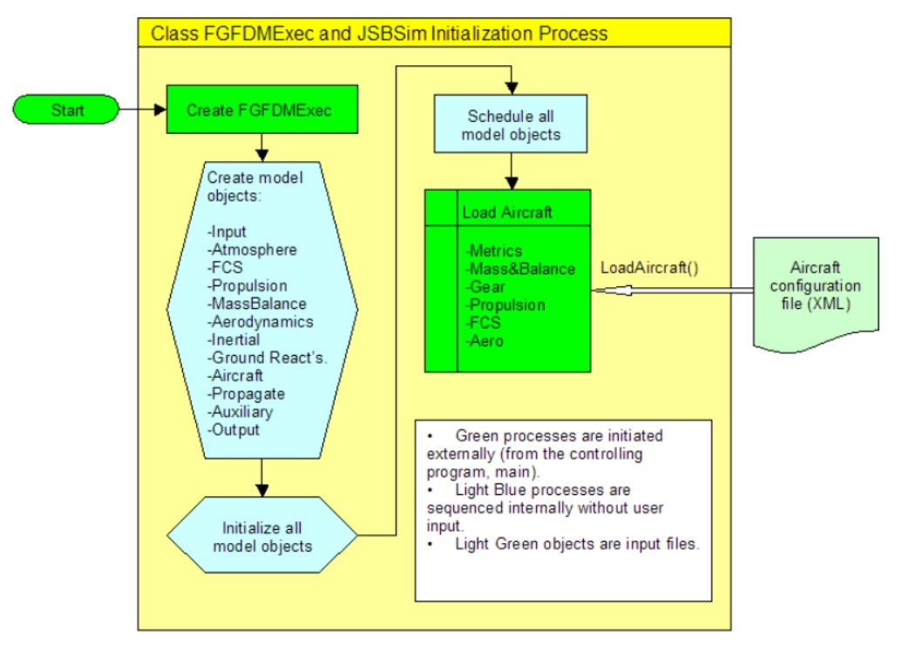

JSBSim是一个开源跨平台的飞行动力学模型（FDM）软件库，用于模拟航空航天飞行器的飞行动力学。 该库已被纳入飞行模拟软件包FlightGear和OpenEaagles。JSBSim可以独立运行，通过命令行参数指定飞行器和初始状态，进行简单情境下的飞行动力学仿真，也可以将JSBSim作为代码库，编程实现飞行器模型加载，设置输入，获得输出。下面将通过分析JSBSim源代码，研究其实现通用飞行动力学模型的方法。
入口分析
下面是JSBSim参考手册中的最简单实例，因JSBSim的不断开发，JSBSim参考手册中该编程实例有点过时，因此进行了少量修改。
1 | #include <FGFDMExec.h> |
从上述代码可知，调用JSBSim的主要方法是利用FGFDMExec类，通过实例化一个FGFDMExec类，就相当于获得了一个运行JSBSim仿真的工具箱，通过这个工具箱就可以调用JSBSim的大部分功能，实现我们要的仿真目标。同时FGFDMExec类通过加载外部飞机的XML脚本，实现飞行动力学模型的通用性。
JSBSim初始化流程
上述JSBSim最简仿真示例中已包含其初始化流程，采用图示如下：

FGFDMExec初始化
FGFDMExec类在其构造函数中对各个模型进行初始化，具体代码在Allocate函数中：
1 | FGFDMExec::FGFDMExec(FGPropertyManager* root, unsigned int* fdmctr) |
Allocate函数代码如下：
1 | bool FGFDMExec::Allocate(void) |
Allocate函数代码中需要注意LoadInputs函数，该函数决定各个子模型的初始化顺序，确定各个子模型的输入输出，具体代码如下：
1 | void FGFDMExec::LoadInputs(unsigned int idx) |
FGFDMExec加载飞机配置
FGFDMExec的LoadScript函数在初始化时负责加载飞机配置，用于初始化各个子模型。
1 | bool FGFDMExec::LoadScript(const SGPath& script, double deltaT, |
FGFDMExec运行
FGFDMExec的Run函数负责飞行动力学模型的计算，其代码如下：
1 | bool FGFDMExec::Run(void) |
FGFDMExec的Run函数将依次调用各个子模型的Run函数。
参考链接
- JSBSim编程实践之入门,by jackhuang.